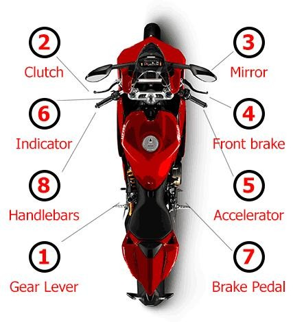
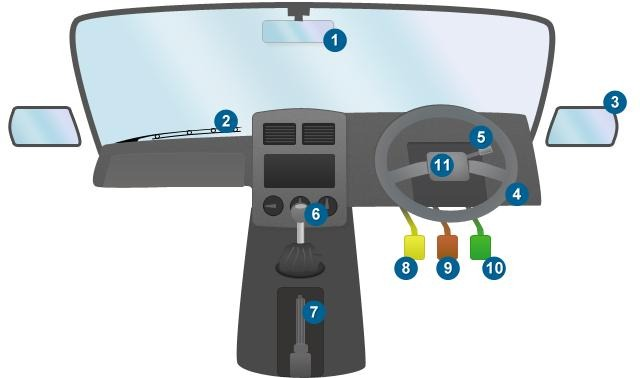
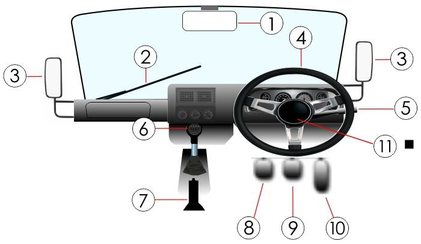

K53 Study Manual
Keep it simple: choose one section, study only that section, then practise only the questions belonging to it.
Learn Before You Test
Build your knowledge first. Read these notes, understand the principles, then practise the questions, road signs and vehicle controls.
Study one section at a time
The supplied question bank has 236 questions. The manual is now focused so learners do not have to study everything on one screen.
Rules of the Road
Q1–72. Speed, following distance, overtaking, lane changes, intersections, parking, pedestrians, emergency vehicles and road safety.
Road Signs
Q73–178. 106 road-sign questions with the supplied PNG artwork. Study all 106 cards in sequence, then practise the full 106-question pool.
Vehicle Controls
Q179–236. Motorcycle, light motor vehicle and heavy motor vehicle controls and diagrams.
What test are you preparing for?
This manual is primarily designed to prepare learners for the learner's licence test. A learner's licence demonstrates that you have basic knowledge of the motor vehicle and the rules of the road. A learner's licence is generally valid for 24 months and cannot be extended.
Before you book
- Choose the correct learner's licence category for the vehicle you intend to drive.
- Make sure you meet the minimum age requirement for that category.
- Prepare your identification and supporting documents.
- Confirm the current fee, photographs, proof-of-address requirements and booking process with your local Driving Licence Testing Centre (DLTC).
- Complete the required learner's licence application form, commonly known as the LL1.
- You will normally undergo an eyesight/vision assessment as part of the process.
Typical documents
Official requirements can vary by province or DLTC. Common requirements include a South African identity document or accepted identification, photographs, proof of address and the applicable fee. If a document is not in your name, additional proof or an affidavit may be required.
On booking day
- Submit the completed application and supporting documents.
- Pay the applicable application/booking fee.
- Complete the required eyesight test.
- Receive confirmation of the test date and instructions from the DLTC.
What you must understand
The theory section is about making safe, lawful decisions on public roads. Learn the rules rather than trying to memorise isolated sentences.
- Road positioning: understand lane use, keeping left where required, safe lane changes and correct positioning before turns.
- Speed: know that a posted speed limit is a maximum, not a target. Reduce speed when visibility, weather, traffic, road surface or hazards require it.
- Following distance: leave enough space to react and stop safely. The two-second method is a useful starting point in good conditions; allow more space in poor conditions.
- Overtaking: only overtake when it is legal, necessary and safe, with sufficient visibility and space to complete the manoeuvre.
- Intersections: approach at a controlled speed, obey signs and signals, observe other road users and yield where the rules require it.
- Pedestrians and cyclists: expect vulnerable road users and give them the care and space they require.
- Emergency vehicles: respond safely and make way when required; do not create a new hazard while doing so.
- Stopping and parking: know where stopping or parking is prohibited and why visibility, intersections and pedestrian areas matter.
- Signals: signal early enough to communicate your intention, but remember that a signal does not give you right of way.
- Alcohol, drugs and fatigue: never drive when your ability to control a vehicle is impaired.
Know the language of the road
- Driver: the person controlling the vehicle.
- Pedestrian: a person travelling on foot, including someone pushing or otherwise moving with certain mobility aids.
- Roadway/carriageway: the part of the road intended for vehicular traffic.
- Intersection: an area where roads meet or cross and where traffic movements interact.
- Shoulder: the portion alongside the roadway with a defined function under the road rules.
- Traffic lane: a portion of the roadway intended for a line of moving traffic.
Right of way is not permission to be careless
Even where another road user must yield to you, you must still take reasonable action to avoid a collision. Defensive driving means continuously observing, anticipating hazards and being prepared for mistakes by others.
Observation routine
Develop a repeatable routine: look far ahead → check mirrors → assess blind areas → identify hazards → decide → signal where required → act safely → re-check.
Vehicle condition
A safe driver also pays attention to tyres, lights, indicators, mirrors, brakes, windscreen visibility, seat belts and other equipment required for safe operation.
Road signs and markings
Road signs communicate instructions, warnings, restrictions, directions and information. Road markings perform a similar communication function on the road surface.
- Regulatory signs: tell road users what they must or must not do.
- Warning signs: alert you to hazards or changes in road conditions ahead.
- Guidance/information signs: help you navigate and identify destinations, routes or facilities.
- Temporary signs: communicate temporary traffic conditions, especially around roadworks or hazards.
- Road markings: include lines, arrows, crossings and other markings that control or guide road use.
Learn the action, not just the name
When studying a sign, ask three questions: What does it mean? Where would I see it? What must I do? This makes sign knowledge easier to apply in the test and on the road.
Traffic lights
Know the meaning of the different signals and understand that you must obey the traffic control in front of you. Never enter an intersection unless you can do so safely and lawfully.
Safe driving in difficult conditions
- Rain: reduce speed, increase following distance and be alert for reduced visibility and slippery surfaces.
- Night driving: manage speed and visibility, use lights correctly and watch for pedestrians and vehicles that are difficult to see.
- Fog or smoke: reduce speed according to visibility and avoid driving beyond what you can safely see.
- Heavy traffic: maintain observation and avoid unnecessary lane changes or aggressive manoeuvres.
- Hills and curves: adjust speed before the hazard, not after you have entered it.
Defensive driving principles
- See the hazard early.
- Predict what could happen.
- Create time and space.
- Communicate your intention.
- Keep an escape option where possible.
- Never allow pressure from another driver to force an unsafe decision.
After a collision
Know the required legal and safety responsibilities after a road crash. First protect people from further danger, obtain appropriate assistance and comply with reporting and information requirements that apply to the incident.
Driving licence categories
South Africa uses licence codes to identify the types of vehicles a driver may operate. Older study material may refer to former code names such as Code 8, Code 10 and Code 14, so learners should understand the current terminology.
| Code | General category | Key description |
|---|---|---|
| A1 | Motorcycle | Motorcycle with or without a sidecar, up to 125 cc. |
| A | Motorcycle | Motorcycle with or without a sidecar, above 125 cc. |
| B | Light motor vehicle | Motor vehicle, including applicable minibus/bus/goods vehicle, with GVM not exceeding 3 500 kg. |
| C1 | Medium/heavy vehicle | Motor vehicle, bus, minibus or goods vehicle with GVM above 3 500 kg and up to 16 000 kg. |
| C | Heavy vehicle | Motor vehicle, bus or goods vehicle with GVM exceeding 16 000 kg. |
| EB | Light vehicle + trailer/combination | Specified combinations involving a light motor vehicle and trailer/vehicle within the applicable mass limits. |
| EC1 | Medium articulated combination | Specified articulated or combination vehicles within the applicable 3 500–16 000 kg limits. |
| EC | Heavy articulated combination | Specified articulated or bus/goods combinations exceeding the applicable heavy-vehicle limits. |
Do not confuse learner's licence codes with driving licence codes
Official learner's-licence information also uses a simpler learner test classification: Code 1 for motorcycles, Code 2 for light motor vehicles up to the specified mass limit, and Code 3 for heavy motor vehicles. The driving licence issued after the practical test uses the detailed A/A1/B/C1/C/EB/EC1/EC system.
| Learner code | Study meaning |
|---|---|
| Code 1 | Motorcycle category for learner's licence purposes, subject to the applicable engine capacity and age requirements. |
| Code 2 | Light motor vehicle category for learner's licence purposes, including vehicles within the applicable 3 500 kg limit. |
| Code 3 | Heavy motor vehicle category for learner's licence purposes. |
Age matters
Minimum ages depend on the category. For example, official guidance states that a learner may apply for the relevant motorcycle category from age 16 for a motorcycle not exceeding 125 cc, while the light motor vehicle learner category has a minimum age of 17. Driving licence applications have their own age requirements. Always check the current official requirement for the category you are applying for.
How to use the Inganathi question bank
The question bank is a learning tool. It should reinforce the theory rather than replace it. The academy reference documents are available as separate pages so this working manual and the test flow remain intact.
Rules of the Road — Q1–72
Study speed, following distance, overtaking, lane changes, intersections, parking, pedestrians, emergency vehicles and road safety.
Road Signs — Q73–178
Study all 106 sign cards in sequence with the supplied PNG artwork. Learn each sign one at a time, then practise the full 106-question pool.
Vehicle Controls — Q179–236
Study motorcycle, light motor vehicle and heavy motor vehicle controls and diagrams before practising the control questions.
Recommended study cycle
- Read the relevant theory in this manual.
- Study one section at a time — Rules, Road Signs or Vehicle Controls.
- Practise the questions belonging to that section and review the explanations.
- When you are confident across all three sections, take the full 3-session test.
Rules of the Road
Q1–72 only. Study these topics before practising the rules question pool.
Speed & following distance
Know the applicable speed limit, adjust for conditions and maintain a safe following distance. Your source teaches the two-second method.
Overtaking
Understand when overtaking is prohibited or unsafe, including poor visibility and situations involving pedestrians and approaching traffic.
Changing lanes
Signal, use mirrors, observe surrounding traffic and check the blind spot before moving.
Intersections & circles
Approach safely, obey signs and signals, yield as required and observe before entering or exiting.
Pedestrians & emergencies
Give appropriate priority to pedestrians and make safe way for emergency vehicles using a siren.
Accidents, towing & parking
Know the required actions after an accident and the rules tested in the supplied question bank.
Road Signs
Only Road Signs are shown here. There are 106 study cards numbered consecutively from Sign 1 to Sign 106, covering questions Q73–178.
Loading…
Loading sign study material…
Vehicle Components & Controls
Study the Department of Transport’s South African Learner Driver Manual, Section 3. Learn each control, its function and how controls work together, then practise Q179–236.
Learn inside the manual
Choose the correct vehicle diagram. Match the number on the image to the control list, read what it does, then test yourself below. Tap any diagram to open the full-size image. This study section follows Section 3 of the South African Learner Driver Manual (Department of Transport, June 2012).
1. Motorcycle controls
Original numbered diagram. Use it with the control list below to learn controls 1–8.

2. Heavy motor vehicle
Numbered heavy motor vehicle cab controls and pedals. Control layouts can vary, so confirm them in the training vehicle.

3. Light motor vehicle
Numbered light motor vehicle dashboard controls. A manual gearbox uses a clutch; an automatic vehicle does not.

Motorcycle controls — numbers 1–8
Based on Section 3, pages 6–7 of the source manual.
| No. | Control | Function |
|---|---|---|
| 1 | Gear lever | Selects gears. Used with the clutch to change gears. |
| 2 | Clutch | Disengages the engine from the gearbox to support gear changes. |
| 3 | Left and right rear-view mirrors | Help the rider monitor traffic behind the motorcycle. |
| 4 | Front brake | Lever that applies the front brake and activates the stop lamp. |
| 5 | Throttle | Twist grip used to regulate engine speed and increase or decrease speed. |
| 6 | Indicator light switch | Signals intention to turn left or right. |
| 7 | Rear brake (foot-operated) | Applies the rear brake. Controls 4 and 7 are the front and rear brakes used to stop. |
| 8 | Handlebars | Used to steer and control motorcycle direction. |
Light and heavy motor vehicle controls — numbers 1–11
Based on Section 3, pages 9–12. The source uses this numbered list for light motor vehicles and heavy motor vehicles.
| No. | Control | Function / when to use it |
|---|---|---|
| 1 | Centre rear-view mirror | Shows traffic behind through the rear window. Check mirrors first to understand the traffic situation behind before acting. |
| 2 | Window / windscreen wiper | Clears the windscreen in rain so the driver can see the road. |
| 3 | Left and right rear-view mirrors | Help monitor traffic behind and to the sides. |
| 4 | Steering wheel | Changes the direction of the vehicle. |
| 5 | Indicator light switch | Signals intention to turn or change direction. |
| 6 | Gear lever / selector | Selects a gear. An automatic selector operates differently from a manual gearbox. |
| 7 | Handbrake / parking brake | Helps keep the parked vehicle stationary. Some vehicles have a foot-operated parking brake. |
| 8 | Clutch (manual only) | Assists with engaging or disengaging gears and is used with the gear lever when changing gears. Automatic vehicles do not have a clutch control. |
| 9 | Brake pedal | Reduces speed or brings the vehicle to a stop. The source notes stopping distance increases on wet roads, at higher speeds and when the vehicle is loaded. |
| 10 | Accelerator | Increases or decreases engine power and vehicle speed. |
| 11 | Horn | Alerts other road users when needed to help avoid danger or a collision. |
How controls work together
The source questions highlight mirrors (1 and 3) and indicators (5) before changing direction. Steer with control 4 when safe.
Use gear lever (6) with clutch (8) in a manual vehicle. Automatic vehicles do not have a clutch pedal.
Use the mirrors to assess traffic behind, then brake (9). The source questions also identify the clutch (8) as relevant just before stopping a manual vehicle.
Use parking brake (7) to help keep the vehicle stationary after parking or when preventing rollback on an incline.
Test yourself
Answer aloud, then open the answer to check your understanding. Questions are based on the sample questions in Section 3.
Which control changes motorcycle speed?
Answer: 5 — throttle.
Which motorcycle controls are used to stop?
Answer: 4 and 7 — front and rear brakes.
Which control is absent in an automatic car?
Answer: 8 — clutch control.
Which control keeps a parked vehicle stationary?
Answer: 7 — handbrake / parking brake.
Which control changes a car’s direction?
Answer: 4 — steering wheel.
Which control clears the windscreen in rain?
Answer: 2 — windscreen wiper.
Which controls help you see traffic to the rear and sides?
Answer: 1 and 3 — centre and side rear-view mirrors.
Which controls are used together to change gears in a manual car?
Answer: 6 and 8 — gear lever and clutch.
What affects stopping distance according to the manual?
Answer: All listed options: wet roads, higher speed and a loaded vehicle increase stopping distance.